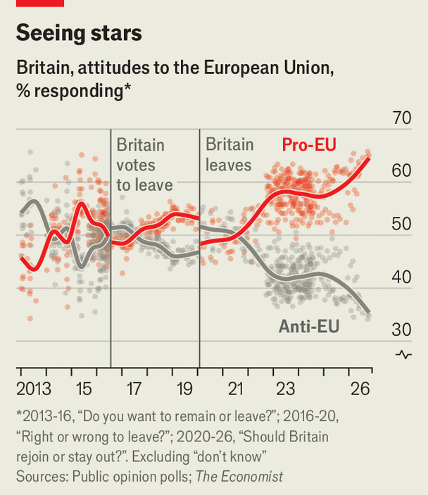

Andy Burnham has ignited the Rejoin debate
But Britain’s prime minister has yet to say what he really wants
Nov 12th 2026
At Labour’s conference in September Andy Burnham suggested Britain might “go all the way” and rejoin the European Union. The prime minister’s counterparts in Brussels may have thought this an unserious basis on which to negotiate. The cabinet is split, as is Parliament. Mr Burnham sounds nonchalant. As he breezily remarked to The Economist: “Who knows how it plays out in the endgame here?”
Yet Britain’s prime minister has won a hearing in Brussels. Few there think rejoining is imminent, and it is not at the top of anyone’s in-tray. But Mr Burnham’s is getting credit for breaking an omertà in Westminster that has held since 2020, when the Brexit divorce was finalised. His musings appear to Eurocrats as if he is probing the limits of British public opinion. It is quite a contrast with Sir Keir Starmer, his predecessor, who spent most of his time in Brussels stubbornly ruling things out. “It’s not just an internal Labour matter, no,” says a European diplomat. “It is something big, the start of a debate about rejoining.”
At a summit on November 20th, Britain and the EU are expected to finalise a package facilitating youth mobility and trade in food and emissions. In a speech around then, Mr Burnham plans to sketch out options for a long-term relationship. He insists he is open-minded about the possible model. But recently he has defended the free movement of people, once a taboo, and pointed out the deficiencies of rule-taker status. Join the dots and they point towards Britain rejoining the EU.
The electoral gambit is obvious: a promise to get closer to Europe may help patch up Labour’s splintered coalition. But British manifesto pledges (if that is what Mr Burnham’s musing becomes) have a habit of landing on Brussels’s doorstep. The 2016 Brexit referendum, after all, began life as an attempt by David Cameron, then prime minister, to unite the Conservatives. “[Mr Burnham] is pursuing a political manoeuvre,” says a diplomat. “But if he wins, it will become more serious.”
Some observers are puzzled. Even as Mr Burnham talks airily of rejoining, British negotiators haggle over far smaller matters, such as how many students would get visas under the November deal. The generous explanation is that they are driving a hard bargain to help sell the deal at home. Even Lord Cameron, once a firm Remainer, has warned Mr Burnham against starting “a decade-long debate” over rejoining.
British ministers insist Mr Burnham is serious. Why else talk about free movement, among the most divisive questions in British politics? Mr Burnham “believes passionately” in getting a “fundamental shift” in the relationship, Stewart Wood, a foreign-office minister, recently told a gathering in Brussels. He urged his audience to understand “quite how much of a political risk the prime minister is taking”.

Some in Brussels reckon the rejoin debate was inevitable. British public opinion has shifted decisively (see chart); economic growth has taken a hit. Mr Burnham is “the product of a decade of Britain after Brexit”, Lord Wood said. The Brexit gamble was premised on a world which has disappeared, with Britain no longer able to ride a wave of free trade governed by multilateral institutions. Instead, the country is being squeezed by the rivalry between America, the EU and China.
That makes the current relationship an unstable equilibrium. As the EU tries to shield its market from aggressive competition—over cars, plastics, steel and more—Britain will be on the sharp end, compelled to lobby for exemptions every few months in an ill-tempered game of whack-a-mole.
Both sides see China as an early test of the rapprochement. Britain wants to be part of the “Made in Europe” scheme, which will use subsidies and procurement to protect European industry from Chinese rivals. Draft conclusions for the summit would, in effect, oblige Britain to raise its tariffs to match the EU’s for supply chains including electric cars if it wants to enjoy a “trusted partnership” on industrial policy. The EU worries that Britain’s relative openness to China has eroded the British market for European carmakers. But for some it has become a test of allegiance as much as economics. Does Britain want to be under the European umbrella, or not?
In Labour, the debate is becoming binary—rejoin or the status quo. Halfway-house models like Norway’s are falling out of favour. Mr Burnham has killed a proposal by Rachel Reeves, the former chancellor, to seek further sector-by-sector participation in the single market through dynamic alignment with EU law, which was a non-starter for the bloc. Some expect Mr Burnham’s food deal, which will require the adoption of EU law without a say, to make the case for a seat at the table self-evident.
Ironically, all this is happening just as Europe may soon look less attractive to progressive Labour voters. Marine Le Pen might become France’s president next year; the Alternative for Germany party is thriving, too. Both favour nationalist agendas that could paralyse European policymaking. Some in the British government think that strengthens, rather than weakens, the case for leaning in and buttressing Europe against Russia. Still, it would test Mr Burnham’s salesmanship.
Negotiations could nevertheless be surprisingly quick. Britain’s return would be a big win for the EU. The country’s laws are mostly still aligned with the bloc’s, and its negotiators are seasoned. But a return of Britain’s budget rebate is out of the question. European governments disagree over whether it would have to join the euro and the Schengen area. Some see British queasiness on these scores as a sign that, deep down, it does not want to be in the club.
What is more, Britain’s opposition parties do not want to be in the EU. The nightmare scenario is a narrow victory for rejoin in a referendum, won on a misleading prospectus with insufficiently broad support in Westminster. Such a mandate might crumple in the negotiating room. If Britain sincerely chooses to rejoin, though, with all the obligations that entails, then it can. The country’s hardest step is the first: working out what it truly wants. ■